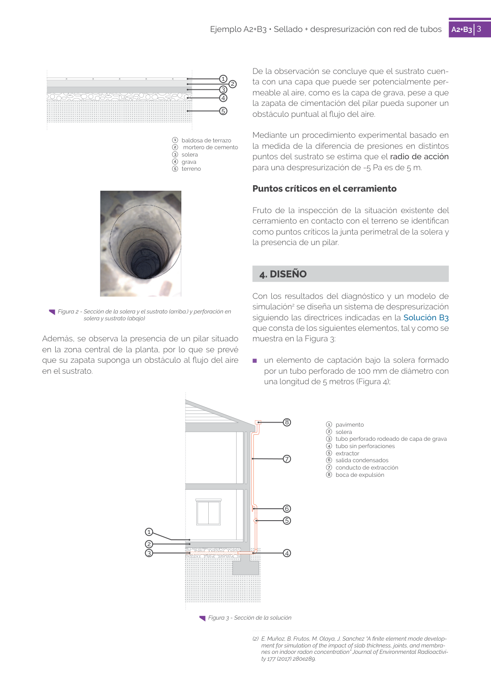

<!doctype html>
<html lang="es"><head><meta charset="utf-8">
<meta name="viewport" content="width=device-width, initial-scale=1">
<title>GUIA · 4. DISEÑO</title><link rel="stylesheet" href="../estilo.css">
</head><body>
<nav><a href="../index.html">Índice</a> › <a href="../doc/guia-pdf-53103f0ba4da-2017-c3d129965a82.html">GUIA</a> › 4</nav>

<header class="meta">
<p><a href="../doc/guia-pdf-53103f0ba4da-2017-c3d129965a82.html">GUIA</a> · 4. DISEÑO · versión 2017 · capa guia</p>
</header>
<div class="cita"><strong>Cita:</strong> GUIA · 4 · 4. DISEÑO · páginas físicas pág. 3 (impresas: ['3'])</div>
<p>Formatos: <a href="../../contenido/docs/GUIA-PDF-53103f0ba4da/2017__c3d129965a82/apartado/a0012__4-diseno.json">JSON compacto</a> · <a href="../../contenido/docs/GUIA-PDF-53103f0ba4da/2017__c3d129965a82/apartado/a0012__4-diseno.md">Markdown</a> · <a href="../../contenido/docs/GUIA-PDF-53103f0ba4da/2017__c3d129965a82/fuente.pdf">PDF fuente</a></p>
<p><a href="../doc/guia-pdf-53103f0ba4da-2017-c3d129965a82.html">Ámbito del documento</a> · <a href="../doc/guia-pdf-53103f0ba4da-2017-c3d129965a82.html#ambito">texto del ámbito</a> ·
<a href="../doc/guia-pdf-53103f0ba4da-2017-c3d129965a82.html">documento y tablas</a></p>
<nav><a href="guia-pdf-53103f0ba4da-2017-c3d129965a82__a0011.html">← Puntos críticos en el cerramiento</a> <a href="guia-pdf-53103f0ba4da-2017-c3d129965a82__a0013.html">1   pavimento 2   solera →</a></nav>
<h1>4 4. DISEÑO</h1>
<p>Tipo: tablas, figuras · nivel 1 · sección estimada: 4. DISEÑO · padre: </p>
<pre class="literal">4. DISEÑO
Con los resultados del diagnóstico y un modelo de
simulación2 se diseña un sistema de despresurización
siguiendo las directrices indicadas en la Solución B3
que consta de los siguientes elementos, tal y como se
muestra en la Figura 3:
■
un elemento de captación bajo la solera formado
por un tubo perforado de 100 mm de diámetro con
una longitud de 5 metros (Figura 4);
(2)  E. Muñoz, B. Frutos, M. Olaya, J. Sanchez “A finite element mode develop­
ment for simulation of the impact of slab thickness, joints, and membra­
nes on indoor radon concentration” Journal of Environmental Radioactivi­
ty 177 (2017) 280e289.
Figura 3 - Sección de la solución</pre>
<h2>Tablas en estas páginas</h2><ul><li>p. 3 · <a href="../../contenido/docs/GUIA-PDF-53103f0ba4da/2017__c3d129965a82/tabla/p0003_t01.json">p0003_t01.json</a> · <a href="../../contenido/docs/GUIA-PDF-53103f0ba4da/2017__c3d129965a82/tabla/p0003_t01.csv">.csv</a></li></ul><h2>Página visual</h2><figure><a href="../../contenido/docs/GUIA-PDF-53103f0ba4da/2017__c3d129965a82/figura/p0003.png"></a><figcaption>Página visual 3 (fuente para fórmulas/tablas/figuras)</figcaption></figure><p class="aviso">PDF fuente redistribuible: copia fiel enlazada en esta página (SHA256 verificado).</p>
<footer>Generado estáticamente desde JSON normalizado; sin JavaScript ni servicios externos.
El JSON es la fuente; este HTML es caché reproducible.</footer>
</body></html>
